All life is made up of building blocks. Those building blocks are elements. Elements may combine to form large molecules called macromolecules. Depending on which elements are used, biomolecules can be formed. The four elements used to form biomolecules are: Carbon, Hydrogen, Oxygen, Nitrogen, and Phosphorous. With these 5 elements, 4 biomolecules can be created: Carbohydrates, Lipids, Protein, and Nucleic Acids. Each type of molecule has different structure, characteristics, and functions. All organic compounds have to contain Carbon (next to Oxygen) in order to be classified as biological.
In addition, there are building blocks within these biomolecules. These are called the monomers; polymers are the biomolecules that monomers form when they are stringed together. The polymers can get in shapes and forms to create complex 3D structures.
Carbohydrates
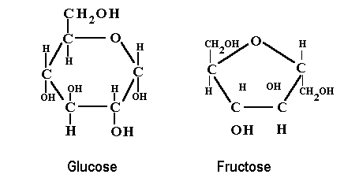 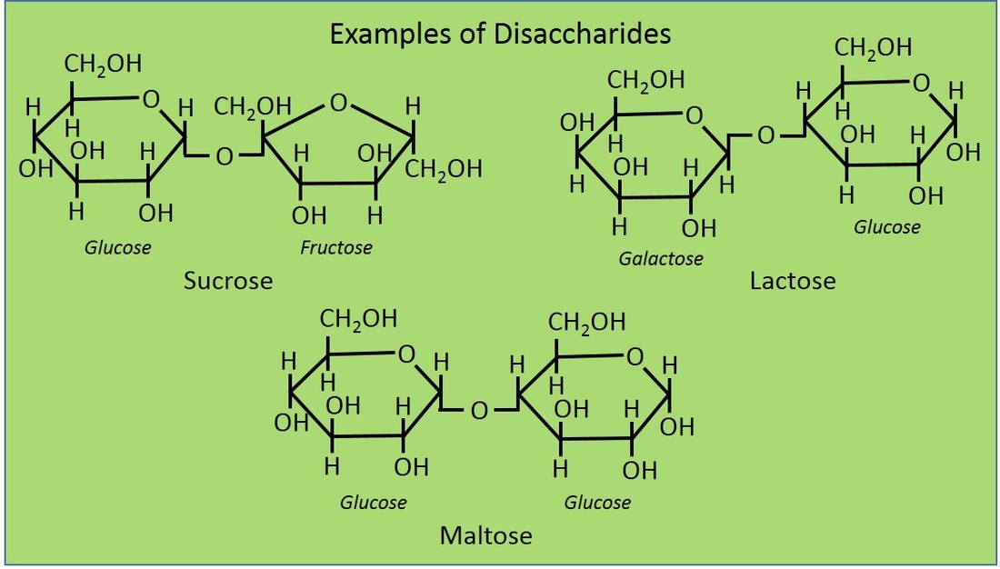Carbohydrates are part of our daily life. Some foods that include carbohydrates are breads, pasta, rice, potatoes, and other foods that can contain wheat and corn. This foods give us quick and easily usable energy; therefore, the function of carbohydrates is to supply give quick and usable energy. Carbohydrates are also called sugars as some examples of carbohydrates are glucose, fructose, deoxyribose, and galactose. The monomer for carbohydrates is a monosaccharide. Two saccharides form a disaccharide for the prefix di- means two. Some examples are sucrose (also known as table sugar), lactose, and maltose. Three or more saccharides in a chain are called polysaccharides, prefix poly- meaning many. Some examples are glycogen, cellulose, and starch. The elements that make up carbohydrates are carbon, hydrogen, and oxygen.
Mostly all carbohydrates are in a ring structure, making it more sturdious. In order to make it easier to use, carbohydrates break done through the process of hydrolysis. This occurs when a water molecules joins the disaccharides or polysaccharides and breaks them apart, returning them to their original monosaccharides. When polysaccharides need to be formed, dehydration takes place. This occurs when monosaccharides lose a water molecule to join together. The process repeats for each two saccharides until it forms a polysaccharide such as cellulose. These reactions occur at enzymes. More information about enzymes are covered in the protein section. The general nomenclature ending of saccharides is -ose. A prefix sometimes can indicate how many carbons are included in the sugar; such as pentose (5 carbon sugar), and hexose (6 carbon sugar).
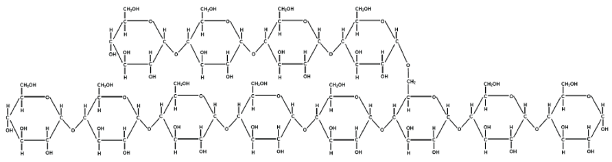Lipids
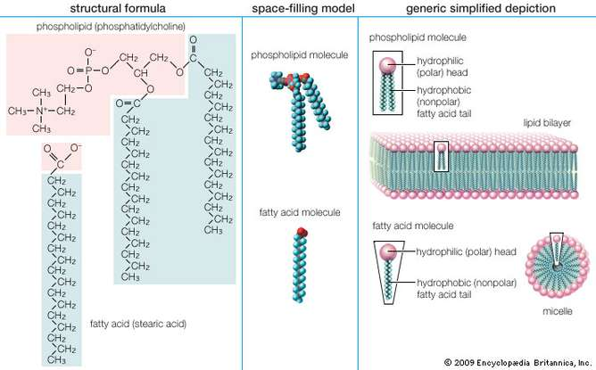Lipids are also called fats, but people consider them as bad. Lipids are beneficial in specific amounts. Objects that have lipids are oils, waxes, chocolate, and many more. Lipids supply a long-term energy that can be used for activities that need energy for a long period of time, such as swimming a great distance. When compared to carbohydrates, lipids will last time while carbohydrates will be hydrolyzed quickly. The monomers for lipids are glycerols and fatty acids. Fatty acids are hydrocarbons that can extend depending on the type of lipid with a carboxyl group at its end. Fatty acids can be either saturated or unsaturated. Saturated lipids have a straight backbone while unsaturated lipids have a carbon double bond at the middle, making a bend. Glycerol is a compound made up by carbon, hydrogen, and oxygen. It's a propane with 3 hydroxyl groups at three of its side hydrogens.
 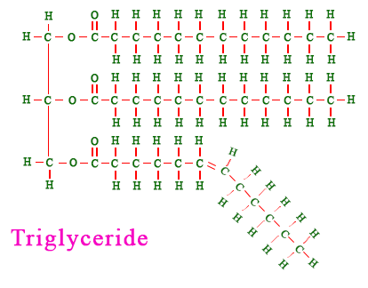
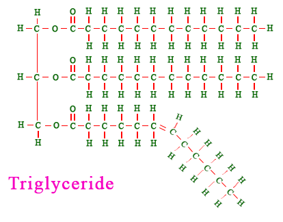
Most lipids are hydrophobic, meaning that they fear water. However, when combined to other structures, one side (the fatty acids) is hydrophobic while the other side (depends on the structure) is hydrophilic, water-loving. Some lipids are possible with only the fatty acids, while others have a grycerol. Some lipids can use all three of the hydroxyl groups while some only use one. In addition, groups such as phosphates or other organic molecules can join to the grycerol to form longer and complex structures. Such examples include phospholipids (have the traditional lipids with two tails and a phosphate group along with choline at the and, making it polar) or triglycerides (using all three hydroxyl groups at the glycerol). With these different types of lipids, each have a different function depending on where they do it. Phospholipids make up membranes, triglycerides make up animal fat, cholesterol also sometimes make up memebranes, and many other functions.
Proteins
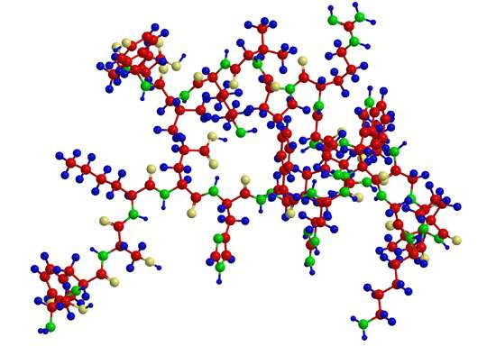Proteins are considered one of the most important macromolecules. These molecules give us the enzymes and other structures that are needed for many things in our body systems. Foods high in protein are meat, nuts, fish, chicken, beans, and many more. We need a continous intake of protein as our body uses them everyday to make many molecules. Some functions of proteins are to carry oxygen, attack germs and viruses, transport molecules through membranes that are imbedded in the phospholipid bi-layer, and many more. In shorter words, they are for growth and repair. Some examples of protein are: hemoglobin, lactase, and actin. The monomer of a protein is called an amino acid. Amino acids are composed of an amine group (NH2) and a carboxyl group (COOH) with an alpha carbon (along with a hydrogen) connecting them. At the alpha carbon, another side chain can be added. This side chains are the ones that give the properties of each amino acids. Some side chains are proline, tryptophan, tyrosine, and methionine, including more. Each side chain can be either polar, nonpolar, or electrically charged (can also be either acidic or basic). The order of amino acis and the side chains indicate the function of the protein. The amino acids each have an end. The side where the amine group is found is called the N-terminus, while the other side is called the C-terminus. In each side, other amino acids join by a peptide bond.
 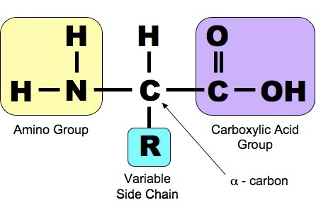
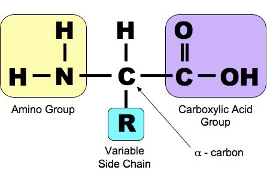
Sometimes, proteins form enzymes. Enzymes speed up the reactions of various activities. They break down complex molecules into simpler ones. Such examples are with carbohydrates. When sucrose is taken in, its specific enzyme, sucrase, locks into the shape of sucrose and hydrolysis occurs, breaking down the disacharide into its two monosaccharides. The intake of the enzyme is called the substrate while the end result is called the product. It is said that enzymes are catalysts and they catalyze reactions. Some people can lack some enzymes. In result, those people cannot intake the substrate of the missing enzymes in large quantities. One such example is with lactose. Some people are lactose intorelant. This means that they lack the enzyme lactase, in which means that they cannot digest quickly lactose. There are other enzymes that people also lack, but lactase in the most common one. As seen before, the nomenclature ending of enzymes is -ase. This means that they can catalyze sugars or other structures.
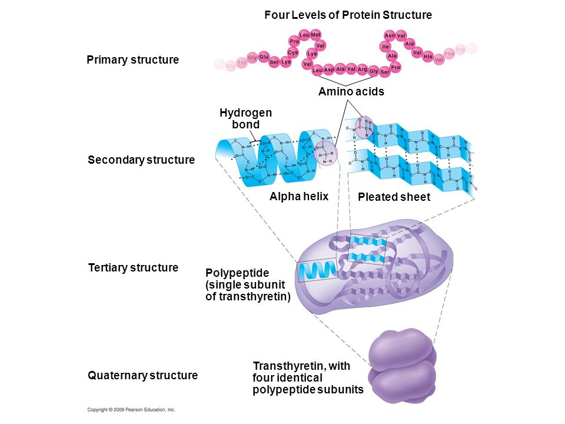Nucleic Acids

Nucleic acids are all around us, we have nucleic acids. Without them, we couldn't exist. With this, all living things have nucleic acids, such as flowers, strawberries, apples, apes, and more. The purpose of nucleic acids is to code for the proteins and other things necessary for the sustaining of life. Each thing nucleic acids code are needed to make what we are. DNA and RNA are the nucleic acids that are universal. Other sub-types of nucleic acids include mRNA, tRNA, and rRNA. Each type of nucleic acid has a specific function under the normal function. DNA holds the code necessary in the nucleus. mRNA transcribes the code into a usable strand. tRNA holds amino acids and joins other amino acids based on the codons (three bases at a time) of the mRNA. rRNA makes up ribosomes that holds the place for the translation of mRNA. The monomer of nucleic acids is a nucleotide. It contains a phosphate group (PO3), a deoxyribose sugar (or ribose sugar for RNA), and one of four nitrogenous bases-or heterocyclic amines-(Uracil for RNA, Thymine for DNA). The elements that make up nucleic acids are carbon, hydrogen, oxygen, nitrogen, and phosphorus.
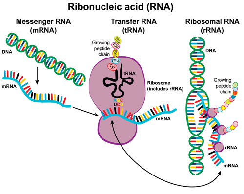
DNA has a double helix backbone that curves all the way. The rungs inside it are the nitrogenous bases. DNA is compacted into chromosomes by protein histones. RNA is just a singe strand with nitrogenous bases poking out. The interaction between DNA and RNA is explained in the DNA Processes section. Each strand is held by hydrogen bonds between oppposing bases. Adenine between thymine (or uracil) and cytosine between guanine. Each base is categorized into two groups: pyrimidines and purines. Each base in each group have a common structure. Pyrimidines are hexagons while purines have a hexagon shape combined with a pentagon shape. The hydrogen bonds can be two or three depending on the bases. Regarding to the backbone, one strand points toward one direction, while the other strnad into the opposing one. This all depends on the direction of the sugars. Each carbon is counted clockwise from the oxygen. This results in one carbon being 5' (prime) and 3'. This directs the direction of the strand. One strand runs from 3' to 5' while its counterpart runs 5' to 3'. This is necessary for the replication of DNA and the transcription of DNA into RNA. DNA is the most important molecules necessary for life and the coming generations.